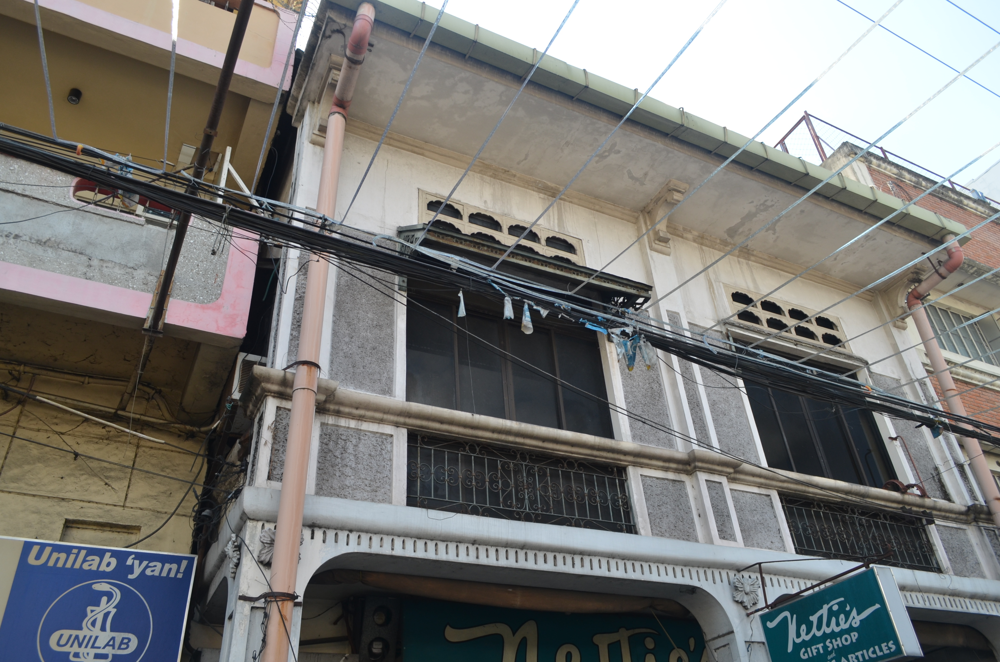
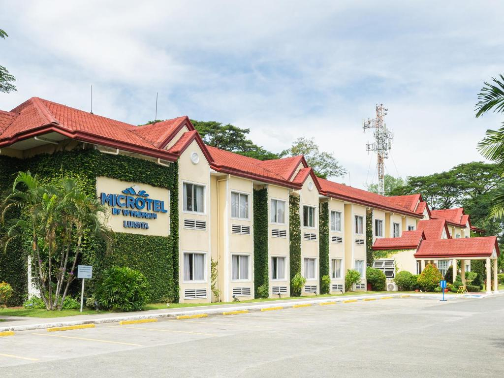
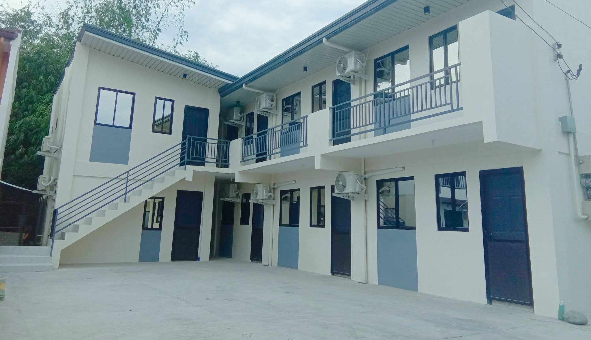
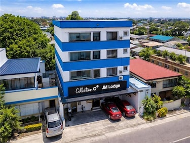

Apartments
Serviced apartments and transient units in Tarlac are designed for travelers who need more space, flexibility, and the comforts of home. They are ideal for extended stays — whether for work assignments, medical visits, study trips, or family relocations — offering kitchen facilities, living areas, and a more independent lifestyle than a standard hotel room.

Featured Apartments
-

Tarlac City Transient -

Luisita Serviced Residences -

Capas Transient House
About These Apartments
- Tarlac City Transient Apartments: Fully furnished units near the city center with a bedroom, living room, basic cookware, and a private bathroom. Weekly and monthly rates available — a practical choice for contractors, medical workers, and long-stay visitors on a budget.
- Luisita Serviced Residences: The most premium apartment option in the province, managed within the Luisita estate. Spacious, tastefully furnished units maintained by a professional housekeeping team. Access to estate recreational facilities and proximity to Luisita's commercial and dining strip.
- Capas Transient House: A clean and practical unit in Capas town proper suited to Pinatubo trekkers and researchers. Air-conditioned bedroom, small kitchen, private bathroom. Owners can assist with guide and transport arrangements for the trek.
Benefits of Staying in an Apartment
- Cook Your Own Meals: Having a kitchen means you can shop at the local Tarlac public market and prepare fresh Filipino dishes at a fraction of restaurant prices — a major advantage on longer stays.
- More Space to Live: Unlike a hotel room, apartments give you a dedicated living area, dining space, and storage — making it far more comfortable if you are staying for more than a few days with luggage or work equipment.
- Cost-Effective for Groups: A transient unit shared between two or three travelers often works out significantly cheaper per person than booking separate hotel rooms, especially for stays of three nights or more.
Things to Confirm Before Booking
- Utilities Inclusion: Ask whether electricity, water, and Wi-Fi are included in the quoted rate or billed separately. Some transient units in Tarlac charge utilities on top of the nightly rate, which can add up on extended stays.
- Housekeeping Schedule: Serviced residences typically include regular housekeeping, but transient units may only offer one change of linen per week. Clarify this upfront especially for month-long bookings.
- Parking & Security: If you are arriving by private vehicle, confirm that secure parking is available. Luisita Serviced Residences and most city transient units provide gated parking, but smaller operators may not.